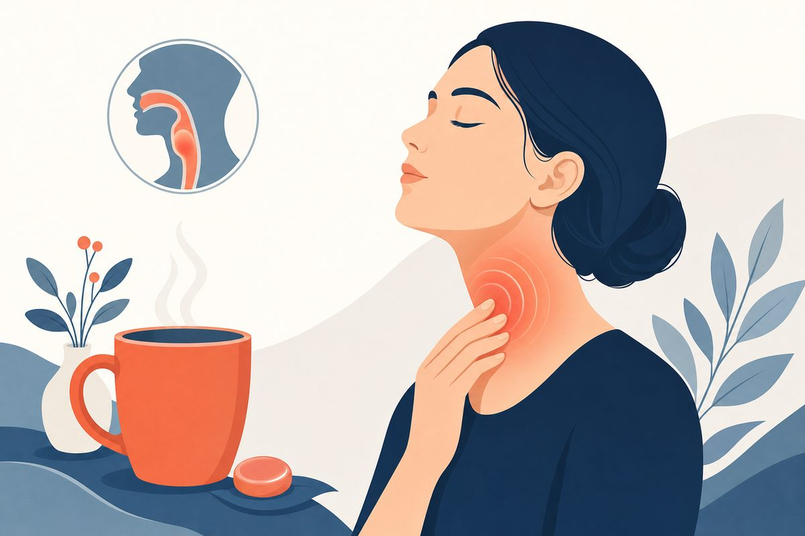

Sore Throat or Strep? 3 Decisions Before Antibiotics
An adult decision guide to symptoms, throat swabs, negative results, treatment and safe recovery.

When does an adult sore throat need a strep test?
For an adult sore throat, make 3 decisions: whether urgent assessment is needed, whether strep testing is appropriate, and whether a confirmed infection needs treatment. Group A strep causes about 5% to 15% of adult pharyngitis. White spots or a clinical score cannot confirm it. Clear viral symptoms usually do not need a strep test; other cases may need a throat swab before antibiotics.[1][2][5][6]
Key Takeaways
- Most adult sore throats are not group A strep. The CDC estimates that group A strep accounts for about 5% to 15% of adult pharyngitis.[1][5][6]
- White spots and the absence of a cough can raise suspicion, but a photograph, fever pattern or high clinical score does not establish the diagnosis.[1][2][4]
- IDSA’s 2025 update conditionally supports risk scoring to decide who should be tested. The certainty of evidence is very low; it is not a new license to prescribe from a score alone.[2][3]
- Clear viral symptoms usually do not need strep testing. For other compatible illnesses, a clinician may arrange an appropriate throat test before choosing antibiotics.[1][5][9]
- A negative rapid antigen test usually does not need backup culture in an otherwise typical adult case. A worsening illness still needs reassessment for other causes or complications.[1][5][6]
- Confirmed strep is treated with a clinician-selected antibiotic, usually penicillin or amoxicillin when suitable. Pain relief and hydration still matter.[1][5][6]
- Difficulty breathing, inability to swallow saliva, drooling, rapidly worsening throat swelling or a muffled voice requires urgent in-person assessment.[5][10][11]
Strep throat vs sore throat: what is the difference?
Do I need antibiotics for a sore throat?
Not automatically. A sore throat describes a symptom; strep throat is a specific bacterial infection caused by group A Streptococcus. Viruses are the most common cause of acute pharyngitis, and antibiotics do not treat viral infections. The CDC estimates that group A strep causes about 5% to 15% of adult cases, so treating every sore throat would expose many adults to unnecessary medication.[1][5][6][9]
Begin with severity, not the appearance of the tonsils. An adult who can breathe comfortably, drink fluids and manage saliva can usually be assessed through a routine clinical pathway. Breathing difficulty, inability to swallow, drooling or rapidly worsening swelling is different: those symptoms need urgent assessment, not an online score or a delayed throat swab.[5][10][11]
Viral pharyngitis
Cough, a runny nose, hoarseness, mouth ulcers or conjunctivitis point toward a viral cause. When the viral pattern is clear, routine group A strep testing is generally unnecessary. The clinician may consider other testing or advice when the overall illness suggests another respiratory infection; a negative strep result does not identify which virus is present.[1][5][6][9]
Group A streptococcal pharyngitis
Sudden throat pain, painful swallowing, fever, tender lymph nodes at the front of the neck and inflamed or coated tonsils can be compatible with strep. These features overlap other conditions. When clear viral features are absent, clinical examination alone cannot reliably distinguish strep from viral pharyngitis, which is why the testing decision matters.[1][5][6]
| Pattern | What it can suggest | What it cannot establish |
|---|---|---|
| Sore throat plus cough, runny nose or hoarseness | A viral pattern; routine strep testing is often unnecessary. | The exact virus or whether a separate complication is present. |
| Sudden pain, fever, tender front-neck nodes and no cough | A pattern that may justify clinician-directed strep testing. | A confirmed bacterial diagnosis without an appropriate test. |
| White tonsil coating or spots | Inflammation or material on the tonsils that needs context. | That an antibiotic is required. |
| Drooling, trouble breathing or rapidly worsening swelling | A potentially urgent problem requiring direct assessment. | A condition suitable for routine video-only management. |
These patterns organize a discussion; they are not a checklist that overrides an examination or urgent warning signs.[1][5][6][10][11]
Do white spots on the tonsils mean strep throat?
No. Tonsil exudate, the white or yellow material seen with some throat infections, can occur with group A strep, but it is not specific enough to choose treatment. Viral tonsillitis and infectious mononucleosis can also cause an inflamed throat and swollen tonsils. A photograph cannot determine the organism or safely exclude a deeper infection.[1][5][6][11][12]
White spots with an acute sore throat
The useful questions are when the symptoms began, whether there is cough or a runny nose, whether fever or tender neck nodes are present, and whether swallowing is getting harder. The clinician also considers exposure and medical history. A swab may be appropriate when the overall pattern fits strep; the coating itself is not a positive test.[1][2][5][6]
Mono and other look-alikes
Marked fatigue, a persistent sore throat and swollen lymph nodes can raise concern for mono, particularly in adolescents and young adults. The CDC notes that mono symptoms can last longer than an uncomplicated sore throat. If mono is suspected, tell the clinician before taking amoxicillin or ampicillin; these medicines are not recommended for people with infectious mononucleosis.[6][11][12][13]
Persistent spots without a typical acute infection, repeated episodes or an unexplained ongoing change deserve an examination rather than repeated antibiotic courses. This guide does not use tonsil appearance to diagnose thrush, cancer or a deep-space infection. An atypical or persistent problem needs an assessment directed at that problem.[5][6][10][11]
Can you have strep throat without a fever?
Yes. Fever is a useful clue, not a requirement for every case. The clinical prediction scores use several findings together, and removing one feature does not reduce the chance of strep to zero. The diagnosis still depends on the clinical context and an appropriate test when indicated.[1][2][4][6]
Likewise, fever does not prove strep. A viral infection can produce fever and severe discomfort. Do not use a single temperature reading to decide that antibiotics are necessary, or use a normal reading to dismiss an illness that is worsening or interfering with drinking.[1][5][6][10]
If you have taken a fever-reducing medicine, describe what symptoms and temperatures were present beforehand. Tell the clinician about recent confirmed household exposure, a prior history of rheumatic fever, immune problems or new swelling. IDSA identifies certain higher-risk situations in which testing should be strongly considered even when the clinical score is low.[2][3][5]
How can you tell if you have strep throat, and what does a score mean?
A Centor or McIsaac score estimates risk; it does not identify bacteria in the throat. The Centor features include fever history, tonsillar exudate, tender anterior neck nodes and the absence of cough. McIsaac adds an age adjustment. Some findings require an examination, so a self-score or video view can be incomplete.[2][3][4][6]
What changed in the 2025 IDSA update?
IDSA conditionally suggests using a clinical scoring system to determine who should be tested. The recommendation has very low-certainty evidence, and its main role is identifying low-probability patients in whom testing is unlikely to help. The update does not favor one particular scoring system and does not present scoring as a stand-alone diagnosis.[2][3][4]
The 2025 release is Part 1 of a broader update, focused on risk assessment. It is not a complete replacement chapter for every diagnostic method, antibiotic regimen or follow-up question. The linked journal article carries “2025” in its title but is indexed in a 2026 journal issue; those are different dates, not evidence of a new recommendation issued this month.[2][3]
The historical score study illustrates why uncertainty remains: in the selected clinic population aged 15 and older, even a Centor score of 4 was associated with a 57% positive-test rate, not 100%. This is a finding from one study, not a personalized prediction or a threshold for automatic prescribing. Current US testing guidance is more useful than copying the older paper’s historical treatment algorithm.[1][2][4][9]
When a low score is not enough
IDSA highlights close household exposure, a history of rheumatic fever and findings suggesting complicated infection as reasons not to rely only on a low score. Possible complications need an appropriate direct assessment. Scores were not designed to rule out every dangerous cause of throat pain.[2][3][5][11]
Rapid strep test accuracy: antigen test, molecular test or culture?
Ask which test was used. A rapid antigen detection test, often called a rapid strep test, is not the same method as a molecular test. Throat culture is another option. A properly selected test helps answer whether group A strep is present, but results still need to be interpreted alongside the illness and specimen collection.[1][2][5][6]
| Method | What it detects or does | Practical adult interpretation |
|---|---|---|
| Rapid antigen detection test (RADT) | Looks for group A strep antigen in a throat specimen. | High specificity, but sensitivity varies. A positive result can confirm strep in the appropriate clinical setting. |
| Molecular testing / NAAT | Looks for bacterial genetic material using a particular assay. | Ask about that assay’s performance and follow-up protocol. Do not assume an antigen-test backup rule applies to every molecular platform. |
| Throat culture | Grows organisms from a throat specimen; CDC describes culture as the diagnostic gold standard. | Can help when a clinician needs additional diagnostic sensitivity or a different evaluation. It is not routinely required after every negative adult RADT. |
No single sensitivity percentage represents all kits, populations and swab techniques. This guide therefore does not advertise a universal rapid-test accuracy rate or imply that every home test is equivalent to a professionally collected clinical test.[1][2][5][6]
Why testing should change the plan
A test is useful when the result can guide care. A positive result in a compatible illness supports targeted treatment; an appropriate negative result should make the clinician reconsider that diagnosis rather than prescribe the same antibiotic anyway. Indiscriminate testing can also detect carriage in someone whose symptoms have another cause.[1][5][6][9]
A 2022 adult before-and-after study evaluated antibiotic prescribing around implementation of rapid testing. It supports attention to how results are used in practice, not a promise that buying a test automatically eliminates inappropriate prescriptions. It was not a randomized trial of every test platform and is not a source for a universal sensitivity figure.[8]
Negative strep test but still a sore throat: what next?
In an otherwise typical adult case, a negative rapid antigen test does not routinely need a backup throat culture. That adult rule differs from the usual recommendation to back up a negative antigen test in children aged 3 years and older. Do not apply a child’s testing instructions to yourself, or assume a negative result means every other cause has been excluded.[1][5][6]
The CDC’s adult outpatient guidance says antibiotics are not recommended for a negative RADT. Continuing pain alone is not a reason to label the test “wrong” and start leftover antibiotics. Viral illness, mono and other explanations may need consideration, especially when symptoms do not follow an expected course.[5][6][9][12]
When reassessment matters more than repeating the same test
Worsening one-sided pain, trouble opening the mouth, a muffled voice, drooling or difficulty swallowing may suggest a complication and needs prompt direct assessment. A clinician can decide whether another test, culture or different examination is appropriate. Do not wait for a repeat swab when breathing or swallowing is becoming unsafe.[5][6][10][11]
Tell the clinician which test you had, when it was collected and whether you had already started antibiotics. A result is one part of a clinical story. It should not become a reason to ignore deterioration, and a negative strep test is not a diagnosis of “nothing wrong.”[1][5][6]
Can strep throat go away on its own?
Symptoms can improve without antibiotics, including some symptoms caused by group A strep. That does not make untreated, confirmed strep the recommended US approach. For a compatible illness with a positive rapid antigen test or culture, CDC guidance recommends antibiotics to shorten symptoms, reduce transmission and decrease complications.[1][5][6][7]
What antibiotic studies can and cannot tell you
The 2021 Cochrane review included 29 trials and 15,337 sore-throat cases. About 82% of participants in placebo or no-treatment groups were symptom-free by one week. This finding includes children and adults and is not an adult-only estimate for confirmed strep. It should not be presented as an 82% chance that your positive-test illness can safely be ignored.[7]
The review found a modest average symptom benefit from antibiotics, with larger symptom effects in strep-positive subgroups. Many included studies were old, often from periods when serious complications were more common. Historical complication estimates cannot simply be copied into a prediction for an otherwise healthy US adult in 2026.[5][6][7]
Why “usually gets better” is not the whole decision
The practical choice is not “antibiotics for everyone” versus “antibiotics never.” It is to identify who needs testing, treat confirmed strep appropriately, and support recovery when antibiotics are not indicated. An adult whose condition is worsening needs reassessment regardless of the average natural history in a trial.[1][5][6][7][10]
Strep throat antibiotics: which treatment is used for adults?
For confirmed group A strep in a person without a relevant allergy, penicillin or amoxicillin is generally first-line. The clinician chooses a regimen after considering the diagnosis, allergy history, kidney function, pregnancy, other medicines and the ability to complete treatment. Antibiotics are not chosen just because a throat is painful or visibly coated.[1][5][6][9][13]
| Clinical situation | Usual decision | Safety boundary |
|---|---|---|
| Confirmed uncomplicated group A strep; no relevant penicillin allergy | Penicillin or amoxicillin is generally first-line; CDC lists a 10-day oral course for these regimens. | The prescription must match the individual. Do not use leftover tablets or copy a child’s dose. |
| Reported penicillin allergy | Clarify the reaction before choosing an alternative. Immediate allergy changes which options are appropriate. | CDC advises avoiding cephalexin and cefadroxil with immediate-type penicillin hypersensitivity. |
| Alternative antibiotic being considered | Use current guidance, local resistance information and the person’s medication history. | Macrolide and clindamycin resistance varies. A broader antibiotic is not automatically better. |
| Likely viral illness or a typical negative adult RADT | Symptom care and reassessment instructions, not routine antibiotics. | A persistent or worsening illness may need a different diagnosis, not an automatic second antibiotic. |
The treatment table summarizes US CDC and IDSA guidance rather than providing a self-prescribing menu. The exact drug, dose and duration belong on an individual prescription.[1][5][6][9][13]
Amoxicillin and allergy history
Describe what happened with any prior antibiotic, including breathing problems, swelling, hives, severe skin reactions or isolated stomach upset. A clinician should interpret that history rather than treating every reported side effect as the same type of allergy. If mono is suspected, say so before taking amoxicillin; CDC advises against amoxicillin or ampicillin in infectious mononucleosis.[1][5][6][12][13]
What not to do
Do not share antibiotics, save part of a course for later or stop early solely because the pain improves. Take the prescribed medicine exactly as directed and contact the prescriber about side effects or missed doses. Severe allergic symptoms require emergency help, and significant diarrhea or a new rash needs clinical advice rather than a home decision to switch medicines.[5][6][13]
How long does strep throat last, and when should treatment help?
With an appropriate antibiotic for confirmed strep, a clinical response is usually seen within 24 to 48 hours. That is a reassessment guide, not a guarantee that all pain disappears by a deadline. Persistent or worsening symptoms, new swelling or inability to drink should prompt clinical advice; do not just keep waiting because the prescription has more days remaining.[5][6][13]
Feeling better does not mean the prescribed course is complete. Penicillin and amoxicillin regimens listed by CDC are generally given for 10 days. Follow the actual prescription; other medicines can use different schedules, so do not shorten or extend a course by copying another person’s instructions.[1][5][6][13]
Three clocks, not one
Symptom improvement, the antibiotic course and reduction in contagiousness describe different things. You can feel better before finishing treatment, or remain uncomfortable after the time when antibiotics have reduced transmission. Neither situation makes it reasonable to change treatment without advice.[1][5][6]
If you are not beginning to improve after the expected early response period, the clinician may reconsider the diagnosis, adherence, complications or other causes. Recurrent episodes are not managed by repeatedly prescribing the same drug without reviewing what prior tests and treatments actually showed.[5][6][13]
How long does a sore throat last if it is not strep?
Many uncomplicated sore throats improve within about one week, although the course depends on the cause. Pain that lasts longer, repeatedly returns or gets worse needs reassessment. A typical timeline is not reassurance for someone who cannot swallow fluids or whose breathing is changing.[6][7][10][11]
A viral sore throat does not become a bacterial infection simply because it is still uncomfortable after a few days. Review the trend: can you drink more easily, is fever settling, and are new symptoms appearing? A clinician may need to consider mono or another diagnosis when the pattern is prolonged or unusual.[5][6][10][12]
Persistent and recurrent symptoms
Frequent episodes or a persistent unexplained throat problem deserve a broader examination rather than ongoing same-day antibiotic refills. The assessment may look beyond acute infection. Persistent lumps, ongoing voice changes or other unexplained symptoms should be discussed directly with a clinician instead of being assigned a diagnosis from this guide.[6][10][11]
This adult guide does not cover long-term ENT management or a pediatric testing pathway. Those needs are different from short-term assessment and triage for a new sore throat.[1][5][11]
How long is strep throat contagious after antibiotics?
CDC guidance says people with group A strep pharyngitis should stay home from work, school or daycare until they are fever-free and at least 12 to 24 hours after starting an appropriate antibiotic. The fever condition and the antibiotic-time condition both matter. This is not a promise of zero transmission at an exact hour.[1][5][6]
Use the instructions given by your clinician and workplace. Healthcare settings or outbreak situations may require additional precautions. If you are still too ill to function or are developing new symptoms, reaching the minimum time interval is not a reason to ignore that deterioration.[1][5][10]
Reducing spread at home
Wash hands, cover coughs and sneezes, and avoid sharing utensils or drinks while ill. Tell a clinician about close exposure when another household member develops symptoms. Routine testing or preventive antibiotics for otherwise well household contacts is generally not recommended outside specific situations that need clinical or public-health advice.[1][5][6]
What helps sore-throat pain while you recover or wait for testing?
Which medicine is good for throat pain?
Fluids, rest, avoiding smoke and a suitable pain reliever can help with discomfort. Cool or warm drinks and soft foods may be easier to swallow. These measures support recovery but do not confirm the cause or eradicate group A strep; they remain useful alongside an antibiotic when one is actually indicated.[5][6][10][11]
Acetaminophen
Acetaminophen can reduce pain or fever. Follow the product label and check all combination cold medicines so you do not accidentally take the same ingredient twice. Liver disease, heavy alcohol use or uncertainty about the total amount is a reason to ask a clinician or pharmacist before using it.[5][10][14]
Ibuprofen
Ibuprofen can also help pain or fever, but it is not suitable for everyone. Discuss kidney disease, dehydration, ulcers, prior gastrointestinal bleeding, blood thinners, heart conditions, pregnancy and other medicines before choosing an NSAID. Do not stack it with another NSAID or assume an OTC medicine is risk-free.[5][10][15]
Salt-water gargles and lozenges
A warm salt-water gargle may soothe the throat if you can gargle safely. Some adults find medicated lozenges helpful for discomfort. These are symptom measures, not substitutes for an indicated throat test or an assessment of significant swallowing problems.[6][10][11]
What does not replace a diagnosis
Do not use leftover antibiotics, a borrowed steroid or an online photograph comparison as a treatment plan. IDSA does not recommend routine adjunctive corticosteroids for group A strep pharyngitis. A clinician may make a different individualized decision in another clinical situation, but that is not a reason to self-start steroids for an undiagnosed sore throat.[5][6][10]
When does a sore throat need urgent care, and what can telehealth do?
Urgent in-person assessment
Difficulty breathing, inability to swallow saliva, drooling, stridor, rapidly worsening swelling or a severe illness getting worse quickly needs urgent medical assessment. A muffled voice, difficulty opening the mouth or marked one-sided swelling can be signs of a complication such as a peritonsillar abscess. Do not wait for a routine video appointment or a throat-test result when these signs appear.[5][6][10][11]
Dehydration, significant difficulty drinking, immune suppression or persistent severe symptoms also lowers the threshold for direct clinical advice. A simple strep score was not designed to assess airway safety or to exclude these conditions.[2][5][10][11]
Routine short-term assessment
For a stable adult without warning signs, a clinician can review symptoms, exposure, allergies, medicines and the pattern of illness. A video encounter may help establish the next step, but it cannot collect a throat specimen or reliably reproduce every part of an in-person examination. If testing or a hands-on exam is needed, use a setting that can provide it.[1][2][5][6]
Two appropriate next steps
- If the illness is mild, hydration is adequate and the pattern is clearly viral, use suitable symptom care and follow the agreed reassessment plan.[1][5][9][10]
- If strep is plausible without clear viral symptoms, arrange clinician-directed testing rather than seeking an antibiotic based only on symptoms. If warning signs are present, bypass routine testing and seek urgent direct care.[1][2][5][6][11]
This guide is for adults with a short-term sore throat. It is not a pathway for children, recurrent unexplained disease, airway emergencies or long-term specialist follow-up.[1][5][11]
Frequently Asked Questions
Symptoms can improve without treatment, but US guidance still recommends an appropriate antibiotic for confirmed group A strep in a compatible illness. The reasons include symptom benefit, reduced transmission and prevention of complications. Do not use natural recovery averages to disregard a positive test.[1][5][6][7]
Clinical improvement is usually seen within 24 to 48 hours of appropriate treatment, although all pain may not disappear that quickly. Contact the clinician if you are not beginning to improve, or sooner for worsening symptoms. Continue the prescribed regimen unless the clinician advises otherwise.[5][6][13]
Seek urgent assessment for trouble breathing, inability to swallow saliva, drooling, rapidly worsening throat swelling, stridor or a severe illness worsening quickly. A muffled voice or difficulty opening the mouth also needs prompt direct assessment. Do not wait for a routine swab or video visit.[5][6][10][11]
References
- Centers for Disease Control and Prevention. Clinical Guidance for Group A Streptococcal Pharyngitis. Updated November 18, 2025; accessed October 26, 2026. https://www.cdc.gov/group-a-strep/hcp/clinical-guidance/strep-throat.html
- Infectious Diseases Society of America. IDSA Clinical Practice Guideline Update on Group A Streptococcal (GAS) Pharyngitis. Part 1: risk assessment using clinical scoring systems. Released October 14, 2025; accessed October 26, 2026. https://www.idsociety.org/practice-guideline/streptococcal-pharyngitis2/
- Linder JA, Watson ME, Wessels MR, et al. 2025 Clinical Practice Guideline Update by the Infectious Diseases Society of America on Group A Streptococcal Pharyngitis: Risk Assessment Using Clinical Scoring Systems in Children and Adults. Clinical infectious diseases : an official publication of the Infectious Diseases Society of America. 2026;82(Suppl 3):i97-i104. doi:10.1093/cid/ciaf668. https://pubmed.ncbi.nlm.nih.gov/41343363/
- Fine AM, Nizet V, Mandl KD. Large-scale validation of the Centor and McIsaac scores to predict group A streptococcal pharyngitis. Archives of internal medicine. 2012;172(11):847-52. doi:10.1001/archinternmed.2012.950. https://pubmed.ncbi.nlm.nih.gov/22566485/
- Shulman ST, Bisno AL, Clegg HW, et al. Clinical practice guideline for the diagnosis and management of group A streptococcal pharyngitis: 2012 update by the Infectious Diseases Society of America. Clinical infectious diseases : an official publication of the Infectious Diseases Society of America. 2012;55(10):e86-102. doi:10.1093/cid/cis629. The 2014 azithromycin-dose correction was checked; this guide does not reproduce the original uncorrected schedule. https://pubmed.ncbi.nlm.nih.gov/22965026/
- Wessels MR. Clinical practice. Streptococcal pharyngitis. The New England journal of medicine. 2011;364(7):648-55. doi:10.1056/NEJMcp1009126. https://pubmed.ncbi.nlm.nih.gov/21323542/
- Spinks A, Glasziou PP, Del Mar CB. Antibiotics for treatment of sore throat in children and adults. The Cochrane database of systematic reviews. 2021;12(12):CD000023. doi:10.1002/14651858.CD000023.pub5. https://pubmed.ncbi.nlm.nih.gov/34881426/
- Sarangarm P, Huerena TA, Norii T, et al. Antibiotic Prescribing in Adults Presenting with Pharyngitis Pre- and Post-Implementation of a Rapid Group A Streptococcus Test. Hospital pharmacy. 2022;57(2):309-314. doi:10.1177/00185787211032365. https://pubmed.ncbi.nlm.nih.gov/35601722/
- Centers for Disease Control and Prevention. Outpatient Clinical Care for Adults. Reviewed April 16, 2024; accessed October 26, 2026. https://www.cdc.gov/antibiotic-use/hcp/clinical-care/adult-outpatient.html
- NHS. Sore throat. Reviewed April 8, 2024; accessed October 26, 2026. UK patient guidance used for general symptom care and escalation, not US antibiotic selection. https://www.nhs.uk/conditions/sore-throat/
- NHS. Tonsillitis. Reviewed March 8, 2024; accessed October 26, 2026. UK patient guidance used for look-alikes and complication warning signs. https://www.nhs.uk/conditions/tonsillitis/
- Centers for Disease Control and Prevention. About Infectious Mononucleosis (Mono). Updated May 9, 2024; accessed October 26, 2026. https://www.cdc.gov/epstein-barr/about/mononucleosis.html
- American Society of Health-System Pharmacists. Amoxicillin. MedlinePlus Drug Information. Accessed October 26, 2026. https://medlineplus.gov/druginfo/meds/a685001.html
- American Society of Health-System Pharmacists. Acetaminophen. MedlinePlus Drug Information. Accessed October 26, 2026. https://medlineplus.gov/druginfo/meds/a681004.html
- American Society of Health-System Pharmacists. Ibuprofen. MedlinePlus Drug Information. Accessed October 26, 2026. https://medlineplus.gov/druginfo/meds/a682159.html
Sources checked October 26, 2026. The 2025 IDSA risk-assessment update is distinguished from older diagnostic and treatment guidance; its journal article was indexed in 2026. Older studies and guidelines remain identified by their actual dates. The Cochrane review includes children and adults, and historical trial complication rates are not current US adult risk estimates. UK NHS sources support general symptom care and warning signs, not US antibiotic selection.
This health guides library is published for educational purposes only. It does not constitute medical advice and is not a substitute for evaluation by a licensed clinician. Always consult a qualified healthcare provider about any medical concern. All articles are reviewed by Parth Bhavsar, MD, and cite peer-reviewed sources where possible.